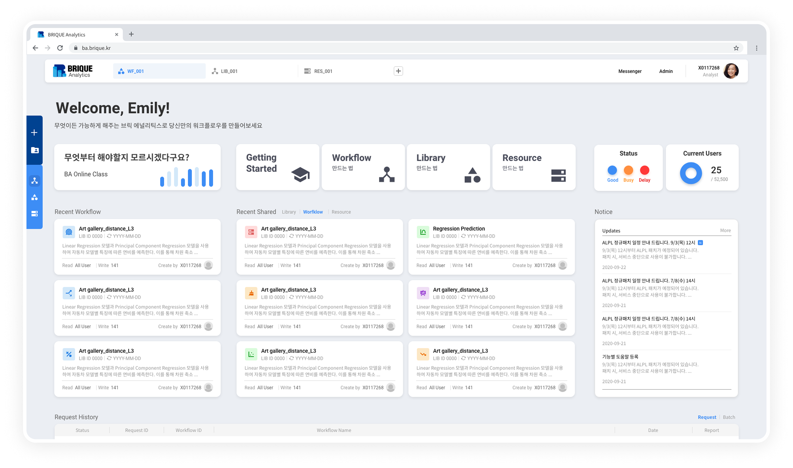
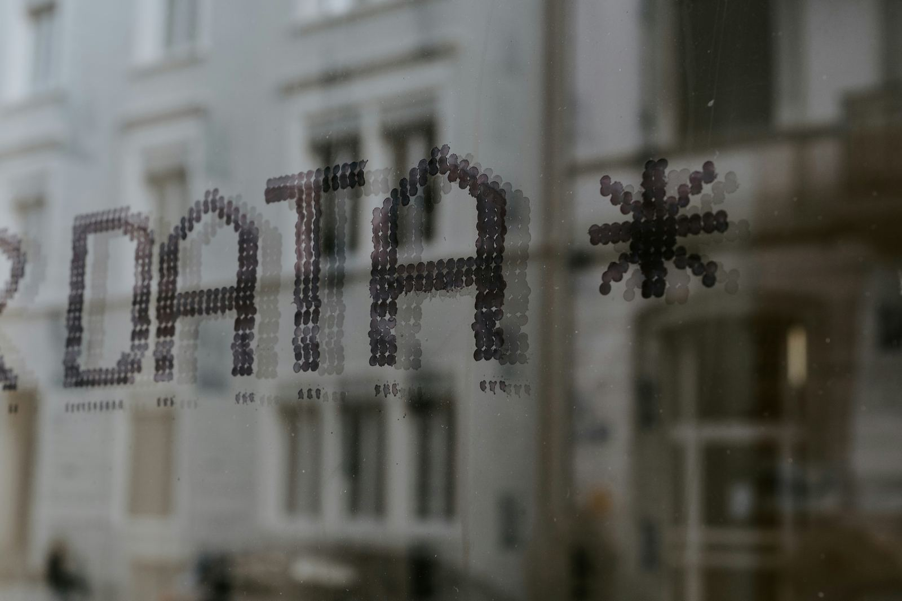
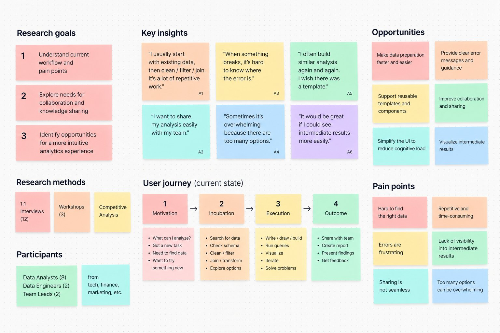
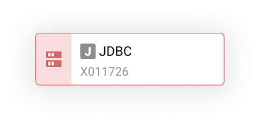
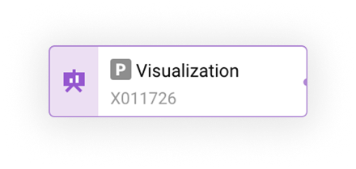
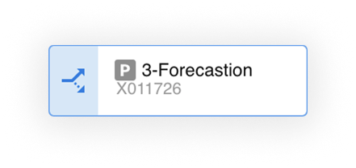
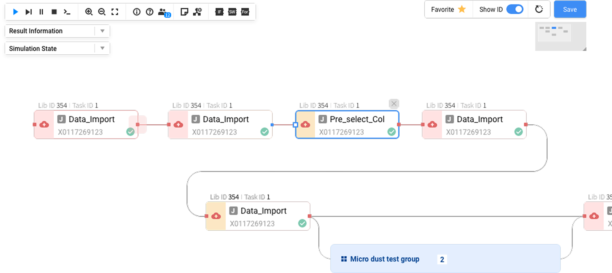
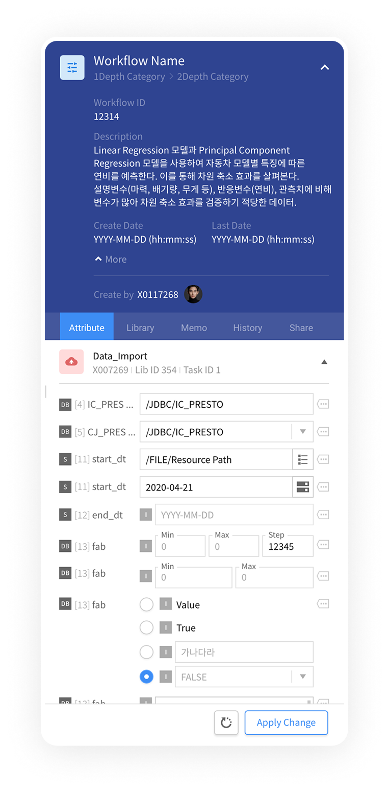
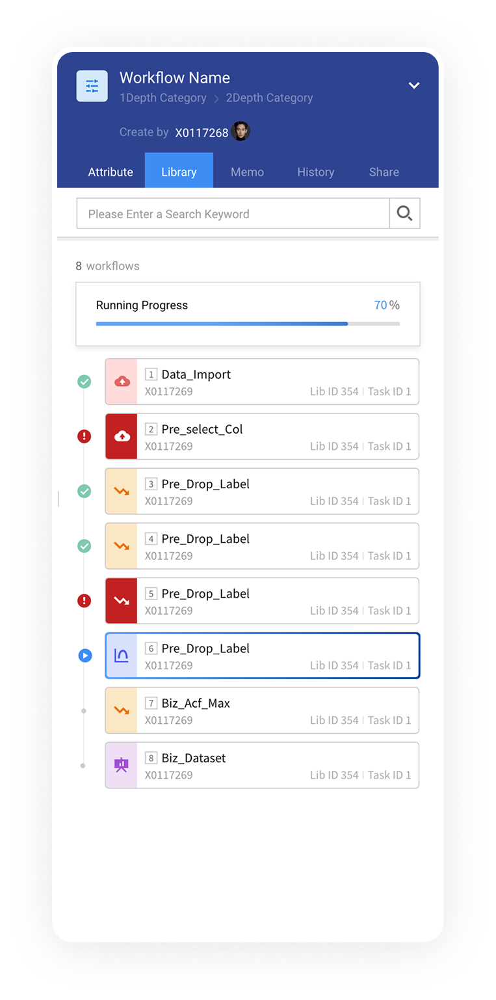

Workflow Data Analytics Platform
A data analytics platform that lets enterprise analysts visually build, run, and monitor complex data workflows without writing code.

I designed BRIQUE Analytics end to end, from the first concept to market launch. It's an AI-driven data analytics platform built as a customizable SaaS product, later deployed for enterprise clients including Samsung Electronics and SK hynix. Working closely with data analysts and engineers, I shaped the product's foundation: a visual workflow where analysts build complex data pipelines without code, monitor execution and errors, and manage the whole process on their own.

Complex data shouldn't
need complex code.
Complex data workflows were difficult to build, understand, and manage.
As data workflows became more complex, analysts had difficulty configuring each step, understanding how data moved through the process, and identifying where problems occurred.
-
Difficult to build and modify
As workflows grew more complex, configuring new processes or modifying existing ones became increasingly difficult. -
Hard to understand the overall flow
It was difficult to see how each step was connected and understand how data moved from one stage to the next. -
Limited visibility into errors
When something went wrong, analysts had difficulty identifying where the issue occurred and which parts of the workflow were affected.


How might we simplify complex data workflows for analysts?
Turn complex data logic into a visual workflow that's easy to build, follow, and fix.
Understanding how analysts work with complex data.
I interviewed data analysts to understand how they prepared, transformed, and analyzed data, and mapped where friction appeared across their workflow.

Repetitive tasks slowed down the workflow.
Analysts repeatedly cleaned, filtered, and joined data, often rebuilding similar processes from scratch.
Errors were difficult to trace.
When something went wrong, it was difficult to identify where the issue occurred and understand how it affected the rest of the workflow.
The overall process lacked visibility.
As workflows became more complex, analysts struggled to understand each step and inspect intermediate results.

Three hypotheses guided the design of the workflow experience.
I translated the research findings into three testable hypotheses that guided my design decisions before moving into wireframes and prototypes.
Lay out each step, from loading to cleaning to joining data, on one canvas, so analysts can see where data comes from and where it goes.
Show execution status and errors right on the step where they happen, and let analysts check intermediate results to trace where a problem started.
Save the steps analysts rebuilt every time, like cleaning, filtering, and joining, as reusable steps they can pull from a library.
Design Solution
I turned complex data processes into a visual workflow, so analysts can build, understand, and manage every step in one place.



A visual canvas for complex workflows.
Analysts can connect and configure each step visually, making the overall data flow easier to understand and manage.

See what's happening at every step.
Execution status and intermediate results are visible within the workflow, helping analysts identify where issues occur.
Build once, reuse when needed.
Frequently used steps can be saved as reusable steps, reducing the need to rebuild the same workflows from scratch.


Impact
A clearer, more manageable way to work with complex data.
By bringing workflow creation, monitoring, and reusable steps into one visual experience, I made complex data processes easier to understand and manage. The platform launched to market and became the foundation later customized for Samsung Electronics and SK hynix.
Reflection
Designing a product meant designing a foundation.
BRIQUE Analytics didn't stay a single product. The same platform was later customized for Samsung Electronics and SK hynix, so every pattern on the canvas had to hold up beyond the first use case. It taught me to design for flexibility, not just for the first set of users. Next time, I'd define early which parts of the experience stay fixed and which can adapt for each client.